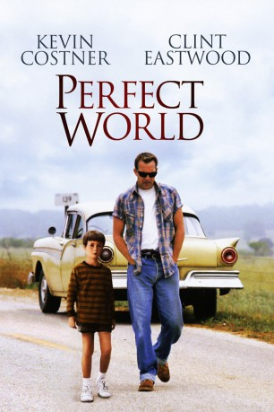
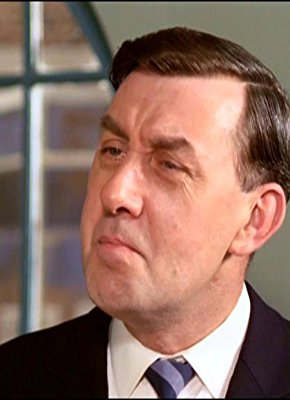

#1577 Perfect World
Alternativ: A Perfect World
 
 IMDB-Wertung: 7.5 / 10
IMDB-Wertung: 7.5 / 10  Metascore: 71
Metascore: 71 
Die beiden Kriminellen Butch Haynes und Terry Pugh entkommen aus dem Gefängnis in Huntsville. Bei ihrer Flucht durch Texas nehmen sie den kleinen Phillip als Geisel. Als sich Pugh an dem Jungen vergehen will, erschießt ihn Haynes und setzt seine Flucht mit Phillip allein fort. Der Texas Ranger Red Garnett setzt sich auf Haynes Fersen. Dabei wird ihm vom Gouverneur gegen seinen Willen die FBI-Mitarbeiterin Sally Gerber zur Seite gestellt. Zwischen Phillip und seinem Entführer entwickelt sich eine Freundschaft. Immer mehr sieht Phillip in Butch einen Vater, da der Vater des Jungen seine Mutter schon lange verlassen hat. Dies ist eine große Gemeinsamkeit zwischen Phillip und Butch, der auch ohne Vater aufwuchs.
Jahr: 1993
Dauer: 138 Minuten
FSK: 12
Land: USA Studio: Warner Bros.Tonspuren: DD2.0 - ,
Untertitel:
Auflösung: 1080p (1920x800) Größe: 8652 MB
Genre: Krimi, Drama, Thriller
Regisseur:  Clint Eastwood
Clint Eastwood
Drehbuch: John Lee Hancock
Soundtrack: Lennie Niehaus
Darsteller:
 Kevin Costner als Robert 'Butch' Haynes
Kevin Costner als Robert 'Butch' Haynes Clint Eastwood als Chief Red Garnett
Clint Eastwood als Chief Red Garnett Laura Dern als Sally Gerber
Laura Dern als Sally Gerber Keith Szarabajka als Terry Pugh
Keith Szarabajka als Terry Pugh Leo Burmester als Tom Adler
Leo Burmester als Tom Adler Bradley Whitford als Bobby Lee
Bradley Whitford als Bobby Lee Ray McKinnon als Bradley
Ray McKinnon als Bradley- Jennifer Griffin als Gladys Perry
 Darryl Cox als Mr. Hughes
Darryl Cox als Mr. Hughes Bruce McGill als Paul Saunders
Bruce McGill als Paul Saunders- Rodger Boyce als Mr. Willits
 Lucy Lee Flippin als Lucy
Lucy Lee Flippin als Lucy Gabriel Folse als Officer Terrance
Gabriel Folse als Officer Terrance- Gil Glasgow als Officer Pete
 John M. Jackson als Bob Fielder
John M. Jackson als Bob Fielder- Connie Cooper als Bob's Wife
 Marco Perella als Road Block Officer
Marco Perella als Road Block Officer- Linda Hart als Eileen, Waitress
- Brandon Smith als Officer Jones
 Mary Alice als Lottie, Mack's Wife
Mary Alice als Lottie, Mack's Wife- Kevin Jamal Woods als Cleveland, Mack's Grandson
- Jimmy Ray Pickens als Cop , uncredited
- David Stanford als Neighbor kid , uncredited
 Libby Villari als Reporter , uncredited
Libby Villari als Reporter , uncredited- T.J. Lowther als Phillip 'Buzz' Perry
- Paul Hewitt als Dick Suttle
- Leslie Flowers als Naomi Perry
- Belinda Flowers als Ruth Perry
- Jay Whiteaker als Billy Reeves
- Taylor Suzanna McBride als Tinkerbell
- Christopher Reagan Ammons als Dancing Skeleton
- Mark Voges als Larry Billings
- Vernon Grote als Prison Guard
- James Jeter als Oldtimer
- Ed Geldart als Fred Cummings
- Nik Hagler als General Store Manager
- Gary Moody als Local Sheriff
- George Haynes als Farmer
- Marietta Marich als Farmer's Wife
 Elizabeth Ruscio als Paula
Elizabeth Ruscio als Paula- David Kroll als Newscaster
- Dennis Letts als Governor
-  John Hussey als Governor's Aide
- Margaret Bowman als Trick 'r Treat Lady
- Cameron Finley als Bob Fielder, Jr.
- Katy Wottrich als Patsy Fielder
- George Orrison als Officer Orrison
- Wayne Dehart als Mack, the Farmer
- Tony Frank als Arch Andrews, Farm Owner
- Woody Watson als Lt. Hendricks
Datei: X:\1993\Perfect World (1993, FSK12, 1920x800).mkv seit 23.07.2015
Festplatte: HD 1992-1995
 Es gibt insgesamt 68 Filme in der Gruppe '1993'
Es gibt insgesamt 68 Filme in der Gruppe '1993'